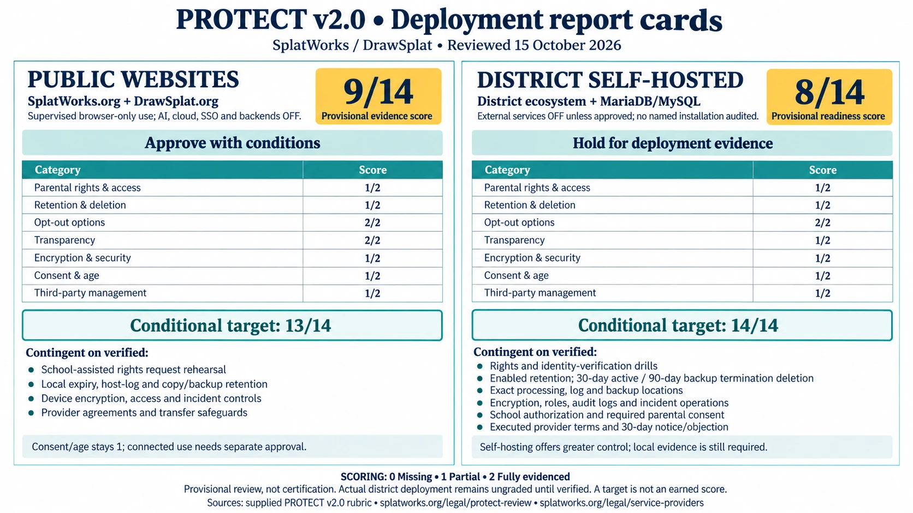

Security, privacy and terms
The policy for the SplatWorks ecosystem: the DrawSplat whiteboard, WriteSplat, GridSplat, ListSplat, ShowSplat, LayoutSplat, creative tools, widgets and games.
Updated October 15, 2026. SplatWorks is the ecosystem; DrawSplat is the whiteboard. This page brings the policy, security boundaries, provider disclosures and review requirements together.
The essentials
- Student data is used only for the school-authorized educational purpose. No sale, targeted advertising, behavioral profiling, cross-context tracking or AI/ML training.
- Local editing needs no student account. Content stays in the browser or local files unless an enabled cloud, AI, backend, remote-resource or sharing feature sends it elsewhere. Public hosting still processes request metadata.
- You and your school retain ownership of your work. The school or deployment owner controls its accounts, connected storage and access.
- Browser clearing and optional expiry are available in Your privacy controls. Each domain and browser profile has separate storage; downloads, shared copies, servers and backups need separate handling.
What is processed and where
Student personal information includes anything reasonably linked to a student or household: account/SSO identifiers, names, class membership, work, submissions, feedback, media, recordings, usage and identifying logs, as well as information covered by applicable student-privacy law. Importing, editing, recording, saving or sharing creates the relevant data.
| Workflow | Data and location | Who controls it |
|---|---|---|
| Browser-only | Drafts, imported originals, fonts/media, settings, game state and recovery data in memory, localStorage or IndexedDB; native files and exports on the device. | User and device/school owner. Browser storage is not application-encrypted at rest. |
| Public websites | Cloudflare Pages receives IP address, user agent, requested URL and operational metadata. Global edge processing; no country-only residency commitment. The public site provides no project-storage backend. | Public-site operator and hosting provider. |
| District MariaDB/MySQL | Accounts, private boards, rosters, classrooms, assignments, submissions, feedback, sessions and activity in the district's configured database/storage. | District or contracted operator; exact server, log and backup locations must be recorded. |
| Google Apps Script | Whiteboard boards, turn-ins, room state, settings, audit and family-request records in the teacher/school's Drive and Sheets. | School Google account owner. Its Compliance Console governs this backend. |
| Optional connections | Selected files to Google Drive, Dropbox or OneDrive; identity claims to configured SSO; prompts/selected input to external AI; remote resources and browser/OS sharing to their chosen destinations. | Approved provider/account and deployment owner. |
Camera, microphone and screen capture require the selected feature's browser/device permission. Supported local imports, conversions and PPTX, ODP, GIF, PDF, image or native exports run in the browser. Embedding an app in an LMS does not change its storage or network boundary; same-origin handoffs and third-party browser storage restrictions still apply. Keep secrets and student records out of URLs.
The per-component inventory lists storage references and literal remote hosts. It is a static inventory; test actual requests for the approved features, including dynamic media, fonts, libraries and user-entered endpoints. October 15 SplatWorks.org and DrawSplat.org startup observations cover all 64 registered destinations per domain, with no attempted external HTTP(S) requests in fresh sessions during the recorded window; selected features and existing projects are outside that check.
Rights, requests and contacts
Parents and eligible students may request access, correction, export, deletion, restriction/pause or raise a privacy concern. Contact the school's published privacy contact for school records, or drawsplat@gmail.com for public-site privacy requests, vulnerabilities and provider/policy notice registration. The public contact routes requests; private district records and local browser files remain with their owners.
Operators must acknowledge requests within 10 school days and fulfill them within 30 calendar days, with any shorter applicable legal deadline taking precedence. Verify identity through established school/family channels and provide an assisted alternative. Deliver exports through an approved channel; do not email student records or identity documents to the developer.
Use native saves for editable work. The privacy center's archive exports origin-local storage and IndexedDB for inspection, with recognized credential fields redacted, including serialized settings; it is not a universal native-file restore format. Clearing reports blocked databases so another open tab cannot silently prevent erasure.
How school record requests are handled
Apps Script Family Access Tools and the Compliance Console support their configured Drive/Sheets whiteboard records. Schools can issue a single-use parent verification code through their established communications channel; administrators verify, approve and complete requests.
District MariaDB/MySQL administrator export/erasure covers account-linked private boards, submissions/feedback, memberships, sessions and usage. Legacy name-only records require verified manual matching. Standalone drafts, downloads, shared media, cloud copies and backups must also be located and handled. No one console discovers every copy across the ecosystem.
Retention and deletion
Existing browser drafts remain until the owner clears them or explicitly enables 1-, 7- or 30-day expiry. Expiry can be turned off without deleting drafts. It is checked on return; an offline device cannot be remotely erased. A successful browser clear offers a receipt with origin, time and cleanup counts; other record locations need separate evidence. Database cleanup and Apps Script triggers must be intentionally enabled and tested for the records they cover.
At termination, provide return/export, delete active student personal information within 30 calendar days, and expire/delete backups within 90 calendar days. Restore procedures must reapply erasures before reopening access. Retention beyond the educational purpose requires a documented legal obligation with an end date, or irreversible de-identification with no re-identification.
Retention schedule by data type
| Data | Schedule | Deletion |
|---|---|---|
| Browser drafts, imported source/media, recovery copies, game state and settings | User-managed until cleared; upgrades do not silently erase existing work Privacy center offers 1, 7 or 30 days from explicit renewal | On next visit after an enabled deadline; blocked database handles are reported. Browser site-data controls are the fallback. |
| AI API keys in the five task tools | Current tab memory only | Lost on reload or closing the tab; legacy persisted keys removed on the next tool visit |
| Google Apps Script boards | Archive at 90 days; delete at 365 days | Configured daily trigger; operator verifies Drive trash, Sheets and backups |
| District database private boards and classroom submissions/feedback | 365 days after last save/submission when the operator enables district record cleanup | Daily configured job; operator reviews configuration before enabling it |
| District assignments and roster/account records | School educational/records schedule; identify exit/withdrawal/termination date | Verified district-administrator erasure workflow for student-linked records; shared class/assignment records require district review |
| Audit records | 365 days, configurable | Daily retention job; student erasure removes identifying fields from account-linked activity |
| Completed or denied family requests | 1095 days, configurable; longer only for a documented legal requirement | Daily retention job; account erasure removes linked request narratives and identifiers |
| Expired or revoked login sessions | Expired sessions removed after 30 days; revoked sessions removed on cleanup | Daily retention job |
| Downloaded files, shared exports, cloud files and external media objects | District-approved educational schedule, active deletion within 30 days of termination | Device/cloud owner deletes every verified copy; revokes links/access; checks trash |
| Backups | Maximum 90 calendar days after termination/deletion request; restore must reapply pending erasures | Encrypted backup rotation, expiry and documented destruction receipt |
| Public hosting request metadata | Provider security/operational retention under the applicable Cloudflare terms; no project analytics beacon is added by these controls | Public-site privacy contact routes provider-held requests; exact provider retention is an evidence item, not a product-controlled timer |
Security and incident response
Production hosting must use HTTPS. Public sites apply HSTS, Content Security Policy, nosniff, referrer and permission restrictions, with tighter policies where supported. Allowed origins vary with app features; the common policy preserves supported embeds and connections.
Hosted/district operators must verify encrypted database transport, encryption at rest for disks, databases, objects and backups, least-privilege access, MFA where available, protected audit logs, secret management, secure backup/restore and routine patching. Device owners must secure local profiles and files. Backend roles separate administrators, teachers and students; validate access with representative accounts. API/database credentials belong on the server.
Investigate suspected incidents, contain access and preserve evidence. Triage within 24 hours without delaying required notice. The contractual district notice is due without unreasonable delay and within 72 hours after confirming a student-data breach; earlier applicable duties take precedence. Include scope, affected data/users, containment and next steps; provide a written post-incident report within 30 days.
For GDPR-covered processing, a processor notifies the controller without undue delay after becoming aware of a personal-data breach. Where required, the controller notifies the supervisory authority without undue delay and, where feasible, within 72 hours of awareness; the Article 33 exception applies when risk to individuals is unlikely. High-risk breaches require notice to affected people without undue delay under Article 34. Do not wait for final confirmation to start these duties. See GDPR Articles 33–34. Operators manage monitoring and notification.
Review security before student rollout, at least annually, and after material hosting, authentication, storage or integration changes. Include access, dependency, retention, backup/restore and vulnerability checks appropriate to the deployment. No independent SOC 2, ISO 27001 or ecosystem-wide security certification is supplied.
Choices, consent and age
Local workflows are available without optional cloud, AI, SSO or backend processing. Connection preferences cover cross-origin fetch, XHR and beacon requests; they are not a firewall for navigation, media, embeds or every external resource. GPC/DNT status is shown; the no-sale/no-profiling protections apply regardless of those signals.
| Age band | Required handling |
|---|---|
| Under 13 / unknown minor | Supervised, private defaults. Document school authorization for the educational purpose or required verified parental consent before covered processing. |
| 13–17 | The same data-use limits and applicable parent rights, state requirements and provider age restrictions. |
| 18+ eligible student | The student exercises applicable records rights; data-use and security limits continue. |
The operator retains its COPPA duties, including required notice and verification that authorization actually comes from the school. Schools may provide COPPA authorization only where permitted for the school-authorized educational use; that does not approve unrelated processing or optional AI. For direct-family collection requiring parental consent, the operator must verify authorization through an established channel, record the purpose/services/retention and support withdrawal. No public child-account registration or ecosystem-wide verified-consent system is provided. Apps Script age locks govern its whiteboard records, not every app.
Brain Sort, Clock Wizard, Step-Splat, Toneshifter and Vibe Check keep API keys in tab memory and require separate approval for each AI provider destination in a tab; reload removes the key. Turning connections off revokes approvals, including pending requests in other open tabs. AI fetch requests reject redirects. Prompts and selected content leave the browser when approved. Use only separately approved business API accounts with verified retention, region and no training/data-sharing opt-in. The approval checkbox is not parental consent. Other tools may retain configuration; review their storage and shared-profile clearing.
Providers and policy changes
Public hosting: Cloudflare, Inc. (United States; global edge network). Optional services: Google Workspace/Drive/Calendar/identity, Microsoft identity/OneDrive, Dropbox, OpenAI API, Anthropic API and individually approved hosting, libraries, media, roster/SSO, bot or sharing endpoints. Company country is not the processing region.
Before student processing, verify each enabled provider's actual contract, roles, jurisdiction/region, data/access scopes, retention/deletion, security, incident notice and applicable transfer safeguards. Flow down the same educational-purpose, no-sale, no-profiling and no-training restrictions. Exact host-log retention and deployment-specific contracts/settings remain evidence items.
SplatWorks gives affected schools at least 30 calendar days' advance notice before a material new public-service student-data provider, through this dated page and registered district contacts. Schools may object, disable the integration or terminate/export before processing starts. Urgent security/legal changes require prompt notice, explanation and the same mitigation path. Self-hosted operators must operate this process for their own providers. Material policy changes are dated here and sent to registered notice contacts; schools notify affected families and staff.
Provider register: locations, data, access and contract links
Cloudflare, Inc.
- Company country
- United States
- Purpose
- Public-site static hosting, CDN and security
- Data processed
- HTTP request metadata, IP address, user agent, requested URL; no student project storage backend provided by the public site
- Processing location
- Global edge network; no country-only residency promise
- Enabled when
- Public sites; self-hosters select their own host
- Terms / DPA
- Terms / DPA
- Transfer safeguards
- Applicable Cloudflare DPA transfer clauses; operator must verify account coverage and deployment-specific requirements
Google LLC / district Google Workspace contracting entity
- Company country
- United States; actual contracting entity and selected data region depend on district agreement
- Purpose
- Optional Apps Script, Drive, Sheets, Docs, PlanSplat Calendar, sign-in and email notifications
- Data processed
- Selected school records, files, account claims, PlanSplat deadline/study-event details and family-request notices
- Processing location
- District Workspace region/configuration; document exact location and backups
- Enabled when
- Only selected and authorized school/cloud workflow
- Terms / DPA
- Terms / DPA
- Transfer safeguards
- District Workspace DPA and applicable transfer clauses; verify service and feature coverage
- OAuth / access scopes
- SplatWorks office apps, AudioSplat, PDFSplat, VideoSplat, MediaSplat, MarkdownSplat, ConceptSplat and MermaidSplat direct Drive save: drive.file; PlanSplat autoload/autosave: drive.file; separately connected PlanSplat Calendar: calendar.app.created plus drive.file for account matching; Apps Script/Hub capabilities and stored records described in /legal/google-oauth-disclosure.html
Microsoft Corporation / district Microsoft contracting entity
- Company country
- United States; actual contracting entity varies
- Purpose
- Optional identity and OneDrive save/open
- Data processed
- Authorized account claims and selected project files
- Processing location
- District tenant and contract region; verify selected services
- Enabled when
- Only configured and user-authorized integration
- Terms / DPA
- Terms / DPA
- Transfer safeguards
- District Microsoft DPA and applicable transfer terms; verify actual scopes and location
Dropbox, Inc.
- Company country
- United States
- Purpose
- Optional GridSplat cloud file save/open
- Data processed
- User-selected native spreadsheet file and authorization metadata
- Processing location
- Provider/account configuration; district records actual location
- Enabled when
- Only configured and user-authorized integration
- Terms / DPA
- Terms / DPA
- Transfer safeguards
- District-approved provider contract and applicable transfer safeguards required before student use
OpenAI API contracting entity
- Company country
- United States; regional contracting entities may apply
- Purpose
- Optional task-tool AI processing
- Data processed
- Prompt and selected input; request metadata
- Processing location
- API account configuration; approval must record retention, region and transfer basis
- Enabled when
- Key stays in tab memory; separate tab approval; approved API account only
- Terms / DPA
- Terms / DPA
- Provider data controls
- Provider data controls
- Transfer safeguards
- Applicable business DPA/transfer clauses; school verifies no data-sharing/training opt-in and approved retention before student input
Anthropic API contracting entity
- Company country
- United States; regional contracting entities may apply
- Purpose
- Optional task-tool AI processing
- Data processed
- Prompt and selected input; request metadata
- Processing location
- Commercial API account configuration; record retention and region
- Enabled when
- Key stays in tab memory; separate tab approval; approved API account only
- Terms / DPA
- Terms / DPA
- Provider data controls
- Provider data controls
- Transfer safeguards
- Applicable commercial DPA/transfer clauses; school verifies no-training configuration and approved retention before student input
User-selected services: hosting, roster/SSO, remote media, libraries, model downloads, QR/bot endpoints and sharing recipients
- Company country
- Must be recorded for each enabled service
- Purpose
- Only the specifically approved feature
- Data processed
- Selected data and request metadata; imported remote resources may contact their host
- Processing location
- Must be documented before student processing
- Enabled when
- Optional; no blanket approval from self-hosting or browser-only editing
- Terms / DPA
- Use the actual service contract, approved scopes, data region and provider privacy/security documentation
- Transfer safeguards
- Select applicable adequacy/SCC/UK transfer safeguards with district review; no transfer approval is implied by this register
Download the provider register (JSON). Register consolidated October 15, 2026.
Google permissions and revoking access
PlanSplat loads/saves planner and recovery files with drive.file. Its separate optional Calendar connection uses calendar.app.created to manage deadline/study events in a dedicated app-created calendar, and drive.file to match accounts. Calendar IDs are stored in main-file app properties; tokens remain in tab memory. Disconnecting stops updates but leaves existing events. Revoke access in your Google account and remove the PlanSplat calendar in Google Calendar if desired. Planner guide.
Apps Script/Hub may use sign-in, Drive, Sheets, Docs for teacher setup and email for enabled family-request notifications. Direct Drive saving in the five SplatWorks office apps, AudioSplat, PDFSplat, VideoSplat, MediaSplat, MarkdownSplat, ConceptSplat and MermaidSplat uses drive.file for app-created/opened files; The shared save actions create new file copies without enabling sharing, with access tokens in tab memory only. VideoSplat project manifests reference local source media; rendered videos and MediaSplat output files upload only when selected. Isolated editors authorize through a separate same-origin window; project content is not sent to that window. AudioSplat uploads a selected mix and creates public-link sharing only when explicitly chosen. Revoke app access through the Google account and delete the corresponding files when needed. Full OAuth permission disclosure.
Terms of service
Use and ownership. Educators, supervised students, families and organizations may create and share work for lawful purposes. Users and schools retain their content ownership. Do not upload or distribute unlawful, harmful, harassing, discriminatory, privacy-invasive or unsafe content. Sensitive student/health/financial records, government IDs and other high-risk data require the organization's specific approval.
Software license. DrawSplat, standalone tools/widgets and backends use AGPL-3.0-or-later, subject to component notices. The five office apps use GPL-3.0-only. Preserve third-party notices and follow each component's license. Software and shipped controls are free, with no per-seat fee; optional support, training or custom development uses a separate services agreement.
Service expectations. Software is provided as-is without guarantees of uninterrupted service, fitness for a particular purpose, managed hosting or legal compliance for a particular school. Operators are responsible for their hosting, approved services, storage, access, backups, retention and student supervision. Students must not receive setup secrets or administrator controls.
School agreements. Districtwide, hosted, SSO-enabled, MySQL-backed or managed deployments require a district agreement/addendum naming the parties, approved purpose/components, data, locations, providers, contacts, retention, security and incident responsibilities. Templates and review packets are not executed agreements. Existing signed agreements retain their terms unless the parties amend them. Any future vendor-managed hosting must identify its storage, access, support/uptime and operational commitments in hosted-service terms or a signed agreement.
District approval and paperwork
Before student use, record the exact deployment and services; approve the purpose, age/consent basis, data flows and locations; test access, rights requests, retention, erasure and backup/restore; identify the responsible contacts; and complete applicable agreements. Keep the redacted evidence and review it annually or after material changes.
Templates, agreement status and administrator instructions
- District Privacy Addendum — signature-ready template.
- NDPA / DPA review worksheet — deployment evidence and exhibit preparation.
- DPA Register — verified execution status and pending reviews.
- Privacy Notice Builder — generate the school's local notice.
- Apps Script Compliance Console and operations reference — backend-specific administration.
- District installation and accessibility statement.
State, federal and EU/UK review
Jurisdiction-specific responsibilities
For FERPA/COPPA and applicable state requirements, document school control, approved educational use, notices, rights handling and the consent basis. The school manages its annual FERPA notice and any directory-information opt-out. Review applicable Texas Education Code, SCOPE Act provisions and current court orders with district counsel; an age-band setting alone does not establish compliance.
Apps Script supports text/link filtering, image review, board freeze and audit records. These controls do not replace a district's CIPA network filtering, internet-safety policy or education, and they do not automatically apply to standalone apps or district database records.
For EU/UK deployments, record controller/processor roles, lawful basis, notices and applicable contracts/transfer safeguards. Assess whether a DPIA and records of processing are required; document retention, rights/withdrawal and regulatory incident notification. Shared browser-storage notices are acknowledgments, not a complete granular-consent mechanism.
PROTECT report cards and review
The October 15, 2026 review gives supervised public browser-only use 9/14 and district self-hosted readiness 8/14. Optional AI/cloud/SSO/backends are off in the public scope. No named district installation was audited. The targets of 13/14 and 14/14 depend on verified operating evidence; these are provisional assessments.
View the horizontal report cards and category scores


| Category | Public evidence | District readiness |
|---|---|---|
| Parental rights and access | 1 | 1 |
| Retention and deletion | 1 | 1 |
| Opt-out options | 2 | 2 |
| Transparency | 2 | 1 |
| Encryption and security | 1 | 1 |
| Consent and age restrictions | 1 | 1 |
| Third-party management | 1 | 1 |
| Total | 9/14 — approve with conditions | 8/14 — hold for deployment evidence |
Public report card (PNG) · District report card (PNG) · Assessment and conditions · Score data (JSON).


What the 13/14 and 14/14 targets depend on
Public websites: 9 to 13
- Rights: rehearse school-assisted access, correction, export and erasure across relevant origins, profiles and copies, plus host-metadata request routing. Keep a redacted completion receipt.
- Retention: confirm Cloudflare's actual log schedule, intentionally enable/test chosen browser expiry, and verify exported copies, backup expiry and erasure replay on restore.
- Security: prove device/copy encryption, profile isolation, access controls, hardening and incident operations. Device evidence comes from the school/device owner.
- Third parties: test actual connections; verify provider contracts, safeguards and notice/objection. Serve dependencies locally where feasible after compatibility testing.
The 13/14 target retains a partial consent/age score and applies to the reviewed, school-authorized local-use configuration. For 14/14, also demonstrate age-appropriate enforcement, school authorization and required verified parental consent across the approved scope.
District self-hosting: readiness to 14
Verify the same rights, retention, security, consent and provider controls, plus exact processing/log/backup locations and the complete enabled data-flow inventory. Installation alone does not supply this evidence. A 2 requires the full rubric descriptor; record gaps as 1 or 0. Under the PROTECT v2.0 rubric, 12–14 is Approve, 9–11 Approve with conditions, 6–8 Hold and 0–5 Do not approve student use. Missing legal prerequisites still block the affected use.

Record and download a deployment review
Score this deployment
Entries stay in the current tab and download locally. Use redacted evidence references, not student records or secrets.
Policy history
October 15, 2026: consolidated security, privacy, terms, providers and deployment review; removed repeated summaries and outdated overlapping text. Commitments, deadlines and signed-agreement status are preserved.
Earlier revisions and artwork sources
- May 16–17, 2026: initial PROTECT policy, rights/incident timelines and district addendum.
- May 24, 2026: Apps Script compliance controls.
- October 14–15, 2026: ecosystem naming, component/provider/retention inventories, shared privacy controls and scoped report cards.
Report artwork used the built-in image generator: individual prompts and comparison prompt. Policy revision history.